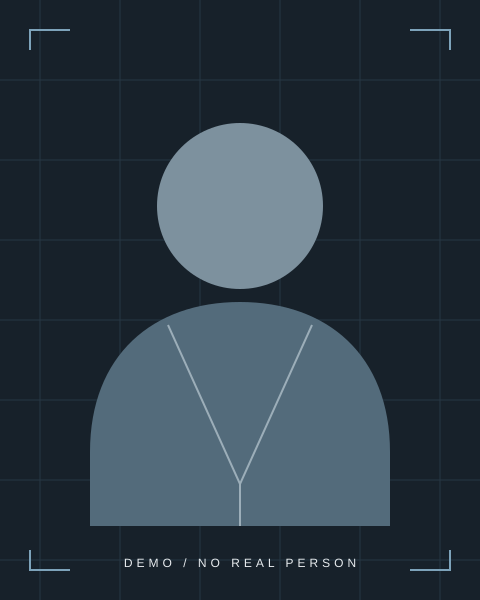

ENGINEERING CAREER / PORTFOLIO虚构人物 · 模板演示
DEMO
ENGINEER

01 / PROCESS02 / INTRODUCTION03 / IMPROVEMENT
CAREER IN THREE DIMENSIONS
工程能力，由项目展开。
理解背景、角色与行动，
让每一项经历都有清晰的依据。
EXPERIENCE / CONTEXT
从经历，看到工作方式。
教育与工程基础 +
EXPLORE WITH AI
从一个问题开始。
了解项目经验、技术方法与协作边界。
交互演示 · 未连接模型服务
CHOOSE A QUESTION
选择问题，查看基于虚构资料的固定演示回答。